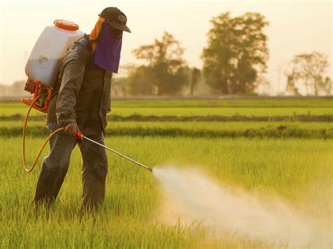
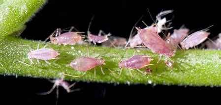
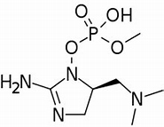
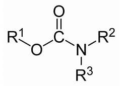
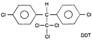
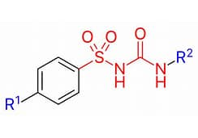

PESTICIDES
 
ABOUT PESTICIDES:
Pesticides are chemical substances that are intended to kill insects.
Generally, an insecticide is a chemical or agent such as a virus, bacterial, antimicrobial, or disinfectant that prevents, ineffective, kills, insects.
The use of pesticides is a very common term that this term is often treated in the same way as the plant protection method.
It is often used to control or control various agricultural pests that can damage crops and livestock and reduce farm productivity.
The most widely used pesticides are insecticides, herbicides, weed control rodents and fungicides to control fungi, fungi and fungus.
TYPES OF PESTICIDES:
This is organized by the types of pests that kill themselves:
Collected By Types Of Insects That Kill Them
Insecticides - insects
Herbicides - plants
Rodenticides - mice (mice and rats)
Bactericides - germs
Fungicides - molds
Larvicides - larvae
CHEMICAL PESTICIDES:
1.Organophosphate:

Most of the organophosphates are insecticides, and they affect the nervous system by disrupting an enzyme that regulates the neurotransmitter of humans.
2.Carbamate:

Like organophosphorus pesticides, carbamate pesticides also affect the nervous system by disrupting the neurotransmitter-regulating enzyme. However, the effects of the enzyme are often reversed.
3.Organochlorine insecticides:

They were widely used in the past, but now many countries have removed Organochlorine pesticides from their market because of their health and environmental effects and persistence (e.g., DDT, chlordane, and toxaphene).
4.Sulfonylurea herbicides:

Sulfonylureas herbicides are marketed for weed control such as pyrithiobac-sodium, cyclosulfamuron, bispyribac-sodium, terbacil, sulfometuron-methyl Sulfosulfuron, rimsulfuron, pyrazosulfuron-ethyl, imazosulfuron, nicosulfuron oxas, oxas-sulfas , ethoxysulfuron, chlorimuron-ethyl, bensulfuron-methyl, azimsulfuron and amidosulfuron.